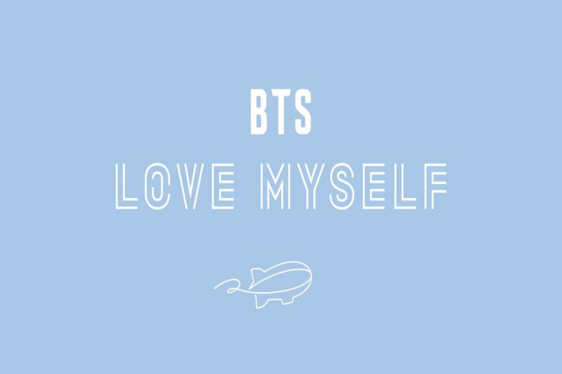
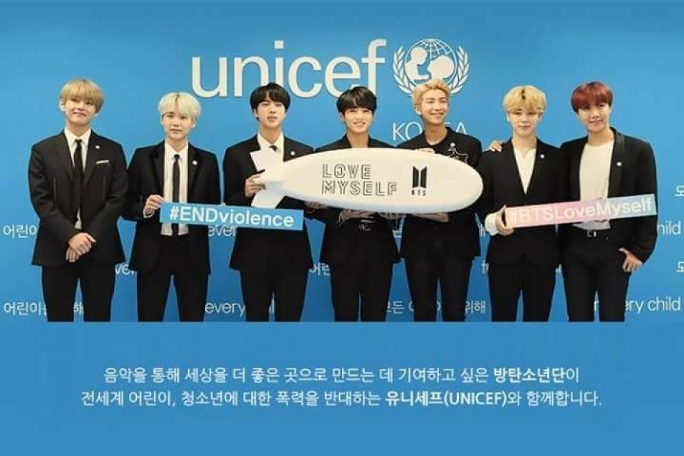

Thanks to their millions of fans—who go by ARMY—BTS has amassed a formidable social media presence. With over 25 million followers on their official Twitter account, 30 million followers on their more personal, secondary Twitter account, 40 million subscribers on their Youtube account, 33 million followers on Instagram—not to mention the group's use of websites like Weverse and Vlive—BTS members are highly interactive with their fans online.
Due to their mastery of social media, BTS can call themselves world record holders. The group had the 2018 Guinness World Records for most Twitter engagements, as well as additional social media records like the most viewed YouTube video in 24 hours, thanks to their hit song "Dynamite." In 2017 and 2018, they were the most-tweeted celebrities, according to Billboard. BTS also beat out Justin Bieber and Selena Gomez to win the Billboard Music Award for Top Social Artists of the Year in 2017, and became the first Korean artists to win it.
Both their 2018 albums, "Love Yourself: Answer" and "Love Yourself: Tear" made it to the no. 1 spot on the Billboard 100 chart. And, their 2019 album "Map of the Soul: Persona" as well as their 2020 album "Map of the Soul: 7" also made it to the number one spot on top the Billboard charts.In addition to their music and internet presence, one thing that sets this group apart from others is their focus on more serious topics like mental health. In September 2018, BTS became the first K-pop group to speak in front of the United Nations. Their "Love Myself" campaign, which launched in partnership with UNICEF, focused on preventing youth violence and global education.
I'm a proud and grateful member of BTS ARMY.There are many reasons to love BTS — their beautiful lyrics, their incredible dance moves, how they take every opportunity to mention ARMY. The way they break records and then set new ones. But what I love best about our Bangtan Boys is their commitment to using their platform to speak out on the issues that matter to them and to encourage people to accept themselves for who they are.
The group encourages young people to pursue their own dreams in “No More Dream" The lyrics say:
Sick of the same day, the repeating day
Grown-ups and my parents
Keep instilling confined dreams to me
Number one future career is a government worker?
It's not a forced dream, a ninth inning relief pitcher.
No More Dream:
BTS uses more than just their music to inspire their fans (or “infire their fans” as we’d say in BTS-speak). In 2017, BTS partnered with UNICEF to launch “Love Myself,” a campaign to prevent violence in and around schools and make the world a better place with kindness and music. Through speeches, events, donations and more, BTS is reminding students to lend a hand to anyone experiencing bullying and help build a nicer world. In the song “Love Myself,” BTS sings, “The standards you put out are harsher on yourself.” That really stuck with me. We have trouble treating and seeing ourselves the way we treat and see others.